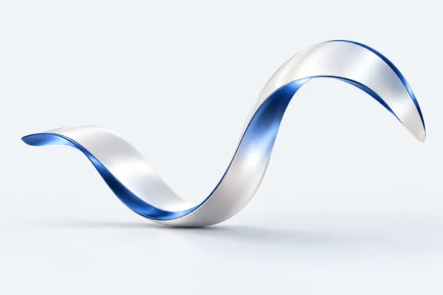
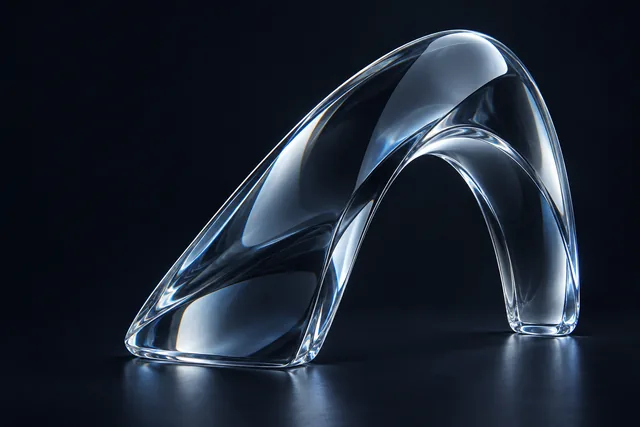
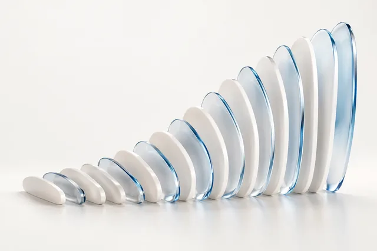

盈米 AI
VISUAL DIRECTIONS / 03
光场静态版 ↗
设计总览 ↗
MATERIAL. FORM. CLARITY.
专业能力，三种视觉语言。
连续曲面、通透玻璃与精密光栅。
选择一款，在下方预览完整页面。

A / SATIN FLOW
缎光流域
连续缎面 · 流动与连接
↗

B / DEEP REFRACTION
深空折光
深色玻璃 · 通透与力量
↗

C / LAMELLAR ORDER
光栅秩序
精密光栅 · 秩序与层次
↗
A / 缎光流域
以平滑连续的曲面，表现专业能力的连接。
打开完整设计 ↗
三款沿用同一份完整报告，数字保持静态，统计日期与来源说明均保留。主视觉为概念艺术。
下载三款完整设计与主视觉提示词 ↓